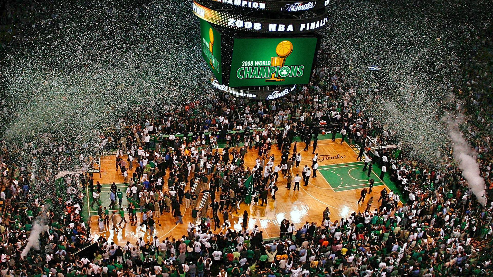

The Boston Celtics are not a basketball team, they are a way of life
2008 NBA Championship winners

The 2008 NBA Finals were held June 5 through June 17, 2008, to decide the champion of the 2007–08 NBA season, and conclude the season's playoffs. The Boston Celtics, top-seeded champions of the Eastern Conference, defeated the Los Angeles Lakers, top-seeded
champions of the Western Conference, four games to two in a best-of-seven series. This was Boston's first title since 1986 during the Larry Bird era and 17th overall.